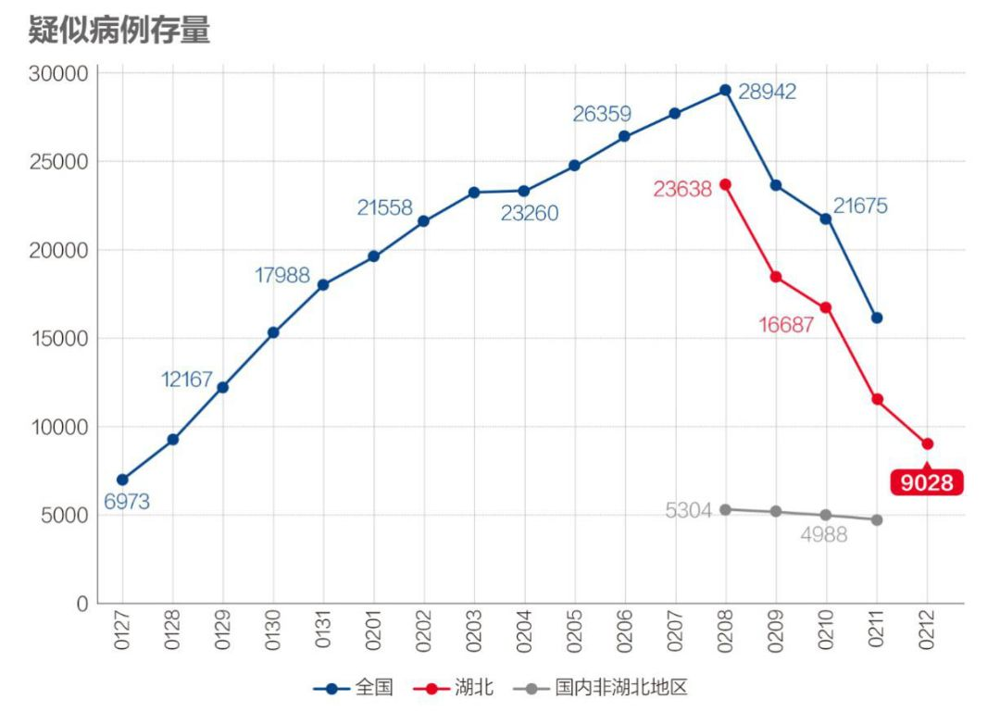
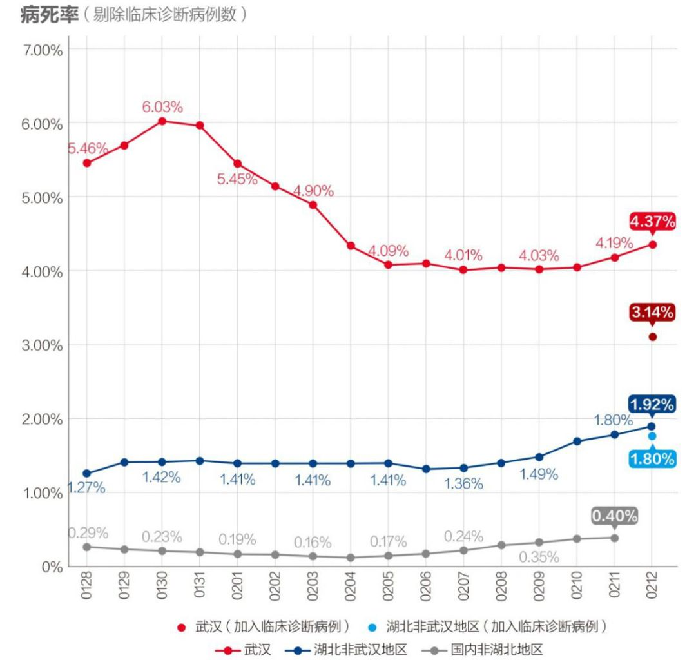

数说疫情0212：武汉形势扭转，湖北夺回主动权，全国继续向好
原文链接 备份链接 文 |《财经》数据研究员 徐进 图 |《财经》视觉中心 编辑 | 谢丽容 1. 今日概况： 根据国家卫健委数据，2月11日0—24时，31个省（自治区、直辖市）和新疆生产建设兵团报告，新增确诊病例2015例（湖 …


文 | 《财经》数据研究员 徐进
图 | 《财经》视觉中心
编辑 | 谢丽容
今日，我们来重点说说湖北的疫情数据。根据湖北卫健委的官方数据，2月12日0时-24时，湖北省新增新冠肺炎病例14840例(含临床诊断病例13332例)，其中，武汉市13436例；累计报告新冠肺炎病例48206例（含临床诊断病例13332例），其中：武汉市32994例（含临床诊断病例12364例）；湖北全省累计治愈出院3441例；累计病亡1310例，其中：武汉市1036例（含临床诊断病例病亡134例）；目前仍在院治疗33693例，其中：重症5647例、危重症1437例，现有疑似病例9028人，当日排除3317人，集中隔离6126人。累计追踪密切接触者158377人，尚在接受医学观察77308人。
1. 今日湖北概况

图1
2. 新增病例：湖北统计口径出现重大变化，前期隐形“堰塞湖”主体显形
今天数字上最大的变动是，今日起，湖北将昨日首次发布的临床诊断疑似病例放进了新增病例数据中。我们昨天已注意到，湖北增加了“新增临床诊断病例”4890例，“现有临床诊断病例”10567例，以及“疑似病例、临床诊断病例集中隔离”15514人。当时根据字面和数字逻辑推测，这是介于疑似和确诊间的病例，应与“尽收尽治”有关，但还未明确统计归类。今天的数据情况来看，是明确归入新增确诊病例了。
我们的判断有三点：
1) 这个数据主要是已存病例的统计划归改变，是前期隐形“堰塞湖”主体的显形，而非昨天新发病例数，不必过度惊慌；
2) 这个数据拿到桌面上肯定比塞在床底下好，说明尽查、尽收、尽治、尽计（统计）有了成效；
3) 前期“堰塞湖”问题最严重的地区是武汉，这次数据变化最大的也是武汉。我们在接下来的数据分析中将把新、老口径分开。先沿用老口径研判解读趋势，待新数据积累几天后再切换到新口径为主。

图2
按老口径看，湖北非武汉地区继续下降，下降趋势继续巩固。

图3
按老口径看，武汉也继续下降，大体实现“尽查、尽收、尽治”。
3. 确诊病例增长率：武汉增速回落至6%以下，湖北非武汉地区降至3%

图4
武汉增长率回落到6%以下，倍增时间延长到12天以上。湖北非武汉地区下降到3%，倍增时间延长到24天。
4. 尚在接受医学观察人数下降

图5
非湖北地区接受医学观察人数（数据待更新）。湖北在医观察人数缓增，显示其追踪密切接触者力度有所提高。但仍与国内其他省区存较大差距。
5. 新增疑似病例

图6
国内非湖北地区（数据待更新）。湖北疑似病例在连续三日大幅下降基础上，又一举下降2200多例。显然排查力度还在加大。其与非湖北地区比值也日趋合理。
6. 在院治疗人数

图7
国内非湖北地区（数据待更新）。湖北地区住院治疗人数大幅增加，主要是昨日“疑似病例、临床诊断病例集中隔离”15514人中的“临床诊断病例”划入。
7. 新增治愈和病死率

图8
国内非湖北地区（数据待更新）。湖北按新增治愈按老口径继续缓降。

图9
非湖北地区（数据待更新）新增治愈与新增确诊的交叉点近在咫尺。

图10
按照新口径，湖北非武汉地区病死率明显降低，武汉病死率大幅降低。符合变化预期。原因是新归入的“临床诊断病例”的死亡率更低。有人曾说湖北的病死率跟非湖北病死率看齐之日才是疫情真正的拐点来临之时。此话不无道理。因为较高的病死率很可能意味着有大量轻症病例远未做到“尽查、尽收、尽治、尽计”，这些未排查、未收治的病例仍会加剧疫情扩撒。
小结：武汉继续消化堰塞湖。湖北非武汉地区继续向好。今天湖北和武汉出现重大人事变动，引起外界高度关注：应勇出任湖北省委书记，王忠林出任武汉市委书记。两位书记临危受命，大家寄予厚望。期待两位书记到任后，上下共同努力，推动湖北和武汉的严峻抗疫形势进入全新阶段。湖北加油！武汉加油！
● 数说疫情
数说疫情0212：武汉形势扭转，湖北夺回主动权，全国继续向好

▲点击图片查看更多疫情报道
责编 | 蒋丽 lijiang@caijing.com.cn
本文为《财经》杂志原创文章，未经授权不得转载或建立镜像。如需转载，请在文末留言申请并获取授权。
原文链接 备份链接 文 |《财经》数据研究员 徐进 图 |《财经》视觉中心 编辑 | 谢丽容 1. 今日概况： 根据国家卫健委数据，2月11日0—24时，31个省（自治区、直辖市）和新疆生产建设兵团报告，新增确诊病例2015例（湖 …
原文链接 备份链接 文 |《财经》数据研究员 徐进 编辑 | 谢丽容 元宵节过完了，再下来是“龙抬头”。 1、 今日概况 2月8日0—24时，31个省（自治区、直辖市）和新疆生产建设兵团报告，新增确诊病例2656例（湖北2147例），新增 …
原文链接 备份链接 *************▲*************2月2日，武汉大学中南医院影像科主任徐海波教授（白衣者）和同事查看患者的CT检查影像。 （新华社/图） 全文共1150字，阅读大约需要3分钟。 武汉确诊患者单日 …
原文链接 备份链接 【财新网】（记者 刘登辉）湖北省2月12日单日新增新冠肺炎病例逼近1.5万，数据激增引发瞩目，原因却和2月4日国家卫健委下发的第五版新冠肺炎诊疗方案有关。（参见：解读|新冠疑似诊断标准再放宽 湖北省内仅需两项临床表 …
原文链接 备份链接 据湖北省卫健委官网2月13日消息，2月12日0时-24时，湖北新增新冠肺炎病例14840例，较前几日大幅增加。原因何在？湖北省卫健委今日公布的《湖北省新冠肺炎疫情情况》给出答案：从今天起，湖北省将临床诊断病例数纳入确 …